You said the allocation page was not really looking at the Geigers you have on the Hub — your favourites, the cohorts, the thematics that are all red — and that it should go from sectors down into the names inside them. It does now. Every number below was read live tonight; nothing here is typed in by hand.
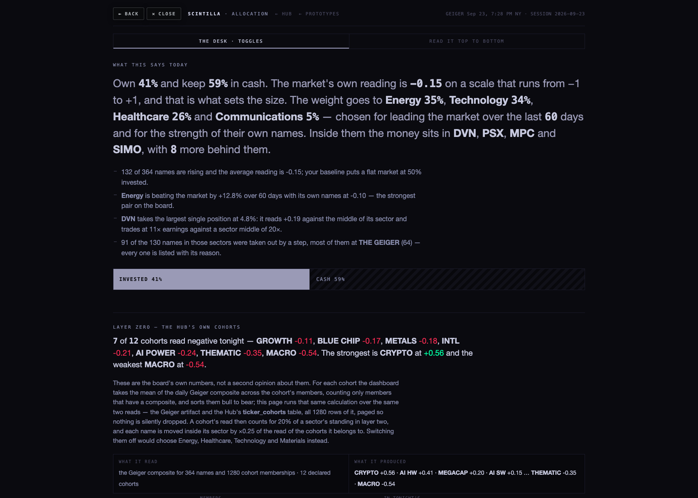
For each cohort the dashboard takes the average Geiger of its members and sorts them strongest to weakest. The
allocation page now runs that same calculation, over the Hub's own ticker_cohorts table — all 1,280
rows of it, read in pages, because an unpaged read silently loses 280 memberships.
| COHORT | READ TONIGHT | MEMBERS | FROM THE OLDER ENGINE | WHAT IT MEANS FOR THE MONEY |
|---|---|---|---|---|
| CRYPTO | +0.68 | 11 | 9 | nine of its eleven are crypto pairs read by the older engine |
| AI HW | +0.41 | 43 | — | 39 of its names are in tonight's sectors — the strongest pull on Technology |
| MEGACAP | +0.20 | 12 | — | 5 in Technology |
| AI SW | +0.15 | 13 | — | 12 in Technology |
| INDEXES | +0.15 | 11 | 2 | the index futures come from the older engine |
| MACRO | −0.10 | 19 | 11 | yields, the dollar and the futures: eleven of nineteen from the older engine |
| GROWTH | −0.11 | 23 | — | 18 in tonight's sectors |
| METALS | −0.13 | 19 | 2 | GCUSD and SIUSD from the older engine — see the gold section |
| BLUE CHIP | −0.17 | 128 | — | your favourite tab, and it is negative; 70 of its names are in tonight's sectors |
| INTL | −0.21 | 13 | — | 10 in Financials |
| AI POWER | −0.24 | 8 | — | 1 in Energy (CCJ, which the funnel then held back) |
| THEMATIC | −0.35 | 23 | — | 8 in tonight's sectors, 7 of them Technology |
You were right: seven of the twelve are negative, and the ones you named — thematics, AI power, blue chips, metals — are all in that list.
What it did to tonight's answer. A sector's standing now carries the average cohort read of its own names, worth 20% of that standing — a slider you can move. With the cohorts off the page would have chosen Energy, Healthcare, Technology and Materials. With them on it chose Energy, Technology, Healthcare and Financials. Materials out, Financials in. That sentence is printed on the page itself, so you never have to take it on trust.
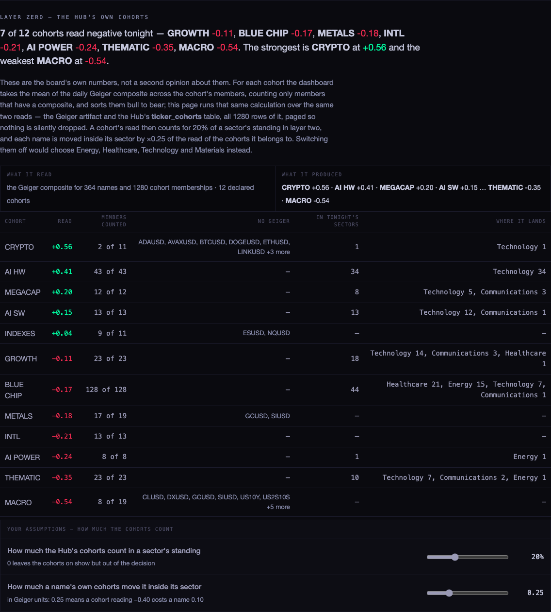
"Same function, same numbers" is a claim, so here is the check. I loaded the dashboard and the allocation page in the same browser at the same moment, ran the dashboard's own cohort function in its own page, read the allocation page's layer zero, and compared them:
| COHORT | THE DASHBOARD | THE ALLOCATION PAGE | MEMBERS |
|---|---|---|---|
| CRYPTO | 0.675844 | 0.675844 | 11 / 11 |
| AI HW | 0.407177 | 0.407177 | 43 / 43 |
| MEGACAP | 0.196548 | 0.196548 | 12 / 12 |
| AI SW | 0.151827 | 0.151827 | 13 / 13 |
| INDEXES | 0.149625 | 0.149625 | 11 / 11 |
| MACRO | −0.104270 | −0.104270 | 19 / 19 |
| GROWTH | −0.111961 | −0.111961 | 23 / 23 |
| METALS | −0.126443 | −0.126443 | 19 / 19 |
| BLUE CHIP | −0.172849 | −0.172849 | 128 / 128 |
| INTL | −0.210580 | −0.210580 | 13 / 13 |
| AI POWER | −0.243419 | −0.243419 | 8 / 8 |
| THEMATIC | −0.347002 | −0.347002 | 23 / 23 |
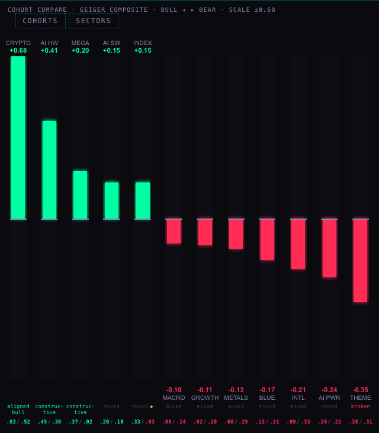
That check found a real mistake, and it is worth knowing about. My first version read the Geiger artifact alone, and four cohorts came out different from the board — CRYPTO, INDEXES, METALS and MACRO. The reason is that the board's cohort number is fed by two engines:
composite_staged table, computed by a different path.The allocation page now applies that same precedence, which is why the twelve match exactly, and it prints how many of each cohort's members came from the older engine — something the board itself does not currently show.
Each chosen sector now opens into every name that entered it, ranked, with its cohorts beside it. Energy tonight, at 35% of the invested money and a cohort read of −0.19:
| NAME | COHORTS | GEIGER | VS THE ENERGY MIDDLE | WHAT HAPPENED |
|---|---|---|---|---|
| PSX | BLUE CHIP | +0.19 | +0.27 | held — 16× earnings against the sector's 20×, 0.79× debt, $750m a day |
| XOM | BLUE CHIP | +0.19 | +0.27 | held — 26× earnings, 0.17× debt, $2.2bn a day |
| BKR | BLUE CHIP | −0.09 | −0.01 | held back at the Geiger — 0.01 below the Energy middle |
| CCJ | AI POWER | −0.57 | −0.49 | held back at the Geiger — this is the AI POWER weakness reaching a single name |
| COP, CVX, DVN… | BLUE CHIP | — | — | not judged — the tape is read for the 60 strongest survivors only, and these ranked below that |
"Not judged" is not "rejected". The page used to file both under the same heading; it no longer does. A name past the tape cap was never measured on liquidity, trend or distance, and it now says so. Raise the cap in layer three and more of them get measured.
Your staples example is worth answering directly. Consumer staples was not chosen tonight — it stands well below Energy, with its fund 5.9% behind the market over 60 days. Had it been chosen, WMT and COST would have been ranked inside it exactly like the Energy names above, with COST at −0.33 held back and WMT at +0.28 going through.
About Walmart being "very red". Its overall Geiger tonight is +0.28, but that single number hides what you were looking at. Rung by rung: +0.74 at 2 hours, +0.68 at 6 hours, +0.03 on the day, then −0.42 at 3 days and −0.36 at a week. It is red on the slow rungs and green on the fast ones, and the composite averages both.
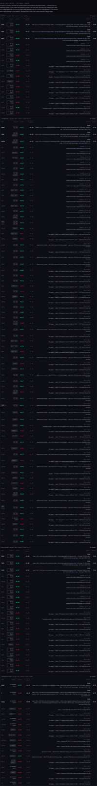
Favourites are read from the same saved list the board uses (sc_fav), merged with the board's own
seed. A star adds a fixed amount — +0.10 tonight, adjustable from 0 to 0.50 — to a name's standing inside
its own sector. It cannot carry a name past a step it failed, and a favourite is never shown as a pick without its
reason. Tonight:
| FAVOURITE | SECTOR | GEIGER | VERDICT |
|---|---|---|---|
| MU | Technology | +0.77 | held back — 14.8% above its 50-day average, past your 12% line |
| SNDK | Technology | +0.65 | held back — 20.6% above its 50-day average |
| NBIS | Technology | +0.33 | not judged — ranked below the 60 names whose tape was read |
The honest answer tonight: all three are strong names the page will not buy here, because two have run a long way from the level they based at and the third was never reached. The star did not change which names are held, and the page says so rather than implying it did.
One limit, stated plainly: favourites live in the browser you star them in. There is no favourites table on the server, so a name starred on your phone will not appear on the desktop page until it is starred there too. That is a small table and one write if you want it.
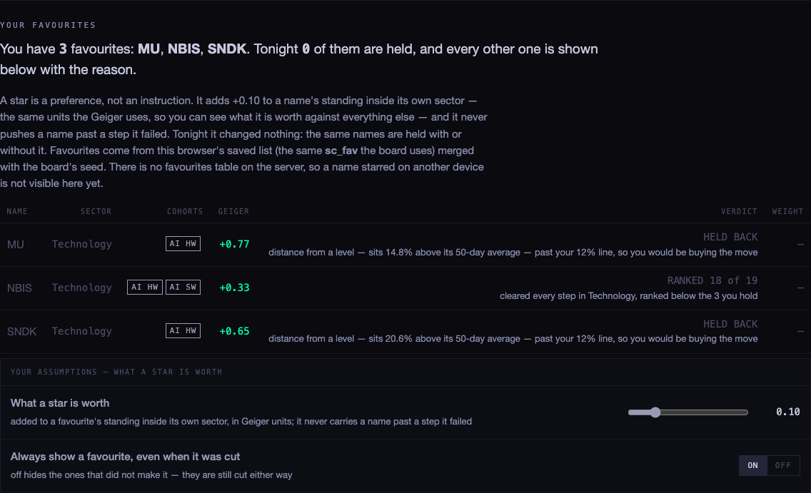
You said the rally was narrow. It is, and now it counts — three measured readings, weighted 30% against the board average:
| READING | TONIGHT | ON THE GEIGER SCALE | EFFECT |
|---|---|---|---|
| names above their own 50-day average | 50% of 351 | −0.00 | neutral |
| names above their own 200-day average | 59% of 347 | +0.18 | adds |
| equal weight against the index (RSP vs SPY, 60 days) | −4.3% | −0.86 | takes away |
| the three together | — | −0.23 | the board average alone would say 42% invested; with breadth the page says 41% |
The averages are the published 50- and 200-day figures the Hub already stores, dated 2026-09-23 — one read instead of 364 chart pulls. The equal-weight leg is RSP against SPY on the same daily bars the sector tape uses.
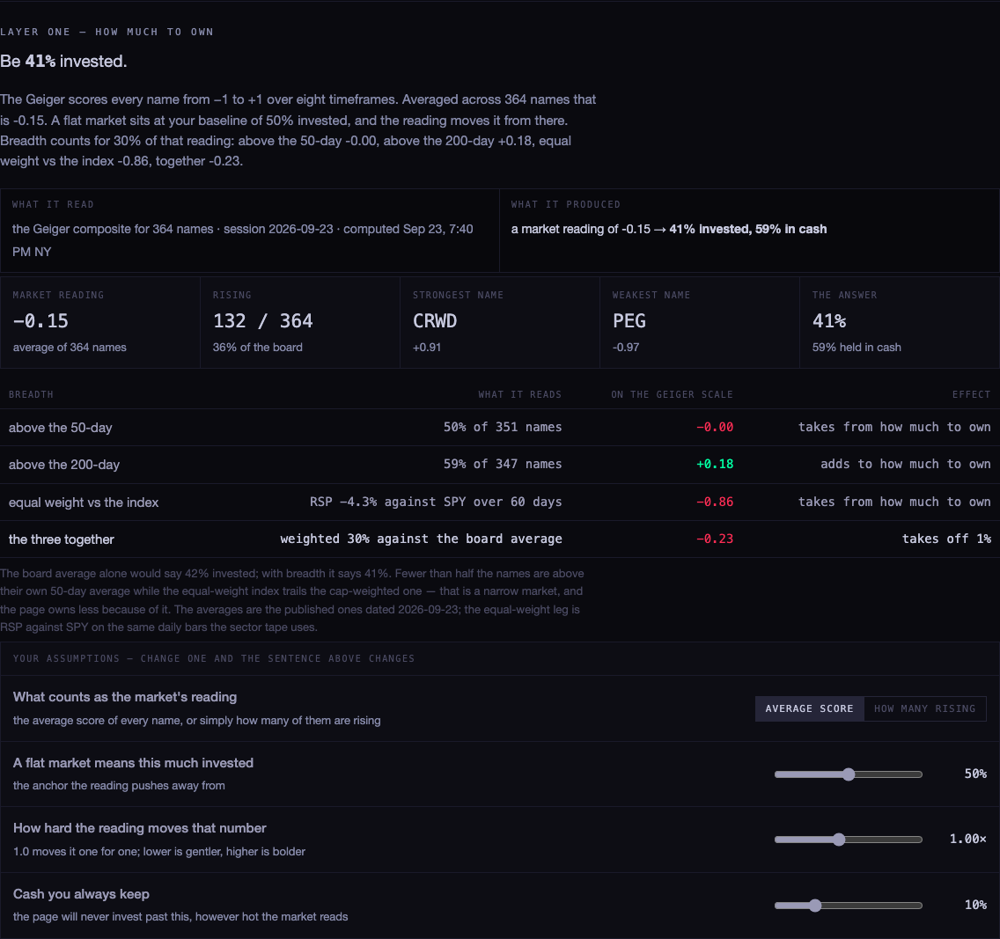
IEF is the iShares 7–10 Year Treasury Bond ETF — a basket of US government bonds, not a company. It has no earnings and nothing to beat; what it has is a price, and that price falls when long-term interest rates rise. The Geiger reads price and nothing else, so a deep red IEF is the Geiger saying this has been falling — another way of saying yields have been climbing. Tonight: Geiger −0.89, last close 90.19, 50-day average 92.59, 200-day 94.71, −3.6% over 20 sessions and −5.1% over 60. Not a warning about the government, and the page never buys it: it is not in an equity sector.
Gold and GLD disagree for four reasons, and the fourth is the real one.
Silver is the same story: SLV −0.02 from the artifact against SIUSD +0.31 from the older engine, with bars a session apart.
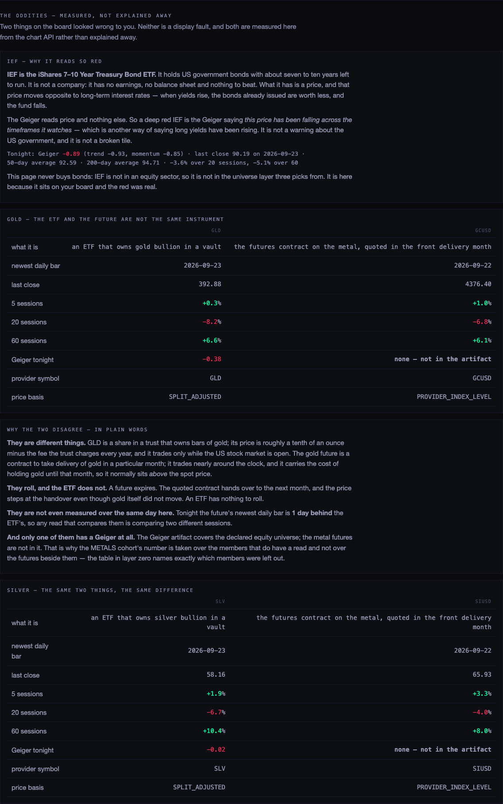
Nothing here was changed. You said the cohorts seem well organised, and they mostly are. Four things I would look at:
| COHORT | WHAT I WOULD LOOK AT |
|---|---|
| MACRO | eleven of its nineteen members are read by the older engine — yields, the dollar, the futures. One number, two calculations. Worth deciding whether MACRO should have a Geiger read at all. |
| CRYPTO | nine of eleven from the older engine, for the same reason. |
| MEGACAP | MEGA_CAP also exists in the table with 62 members while the board reads MEGACAP with 12. Two keys, one idea — worth a decision. |
| METALS | shares four names with MACRO (GLD, SLV and the two futures), so those four vote twice; and its two futures come from the older engine. |
| AI SW / GROWTH | share six names. Fair enough — they are genuinely both — but the two reads are not independent. |
| the rest | nothing misfiled that I can see. |
The table also holds a hundred-odd keys that are not cohorts — the eleven sector names, the size buckets and the FMP industry labels. That is not a fault: they feed the SECTORS side of the board's toggle. The page only ever treats the twelve declared cohorts as cohorts.
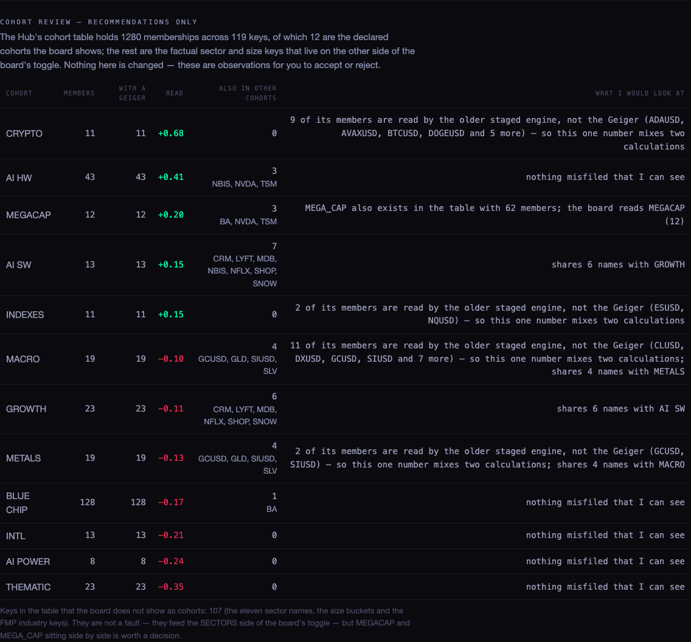
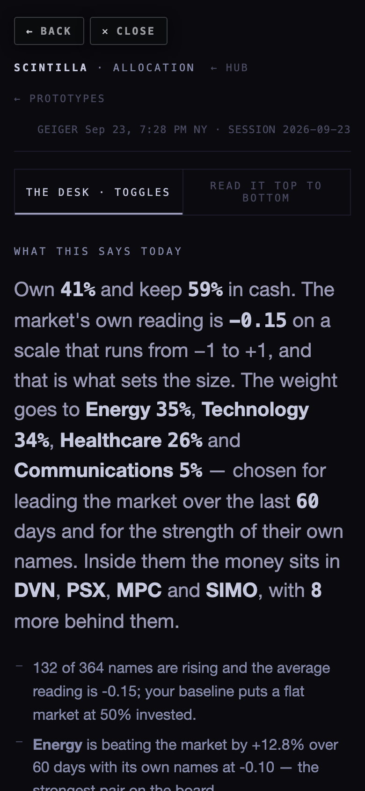
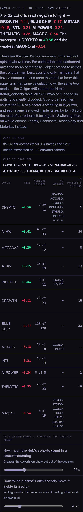
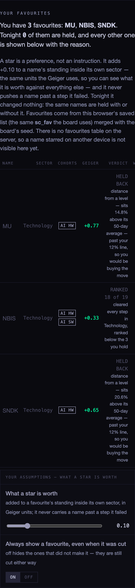
| WHAT | SOURCE | TONIGHT |
|---|---|---|
| the Geigers | chart API /geiger — the same artifact the board reads | 364 names, session 2026-09-23 |
| the non-equity reads | composite_staged, the older engine, for members that are not declared equities | updated 23:36Z tonight |
| the declared equity list | chart API /universe | 364 symbols |
| cohort membership | ticker_cohorts, read in pages | 1,280 memberships |
| 50- and 200-day averages | provider_indicators_current, FMP, daily | 364 and 360 names, dated 2026-09-23 |
| equal weight vs index | chart API /candles, RSP and SPY, daily | 260 bars each |
| favourites | this browser's sc_fav plus the board's seed | MU, NBIS, SNDK |
| the oddities | chart API /candles for IEF, GLD, GCUSD, SLV, SIUSD | full payload, provider symbol and price basis included |
| sectors, multiples, debt, earnings, rotation | unchanged from before tonight | as the page already listed them |
hub/allocation-3-20260923 from b6913cb · 470 tests, 466 pass; the
two failures are the two already failing on production · screenshots taken in a real browser at 1680 and 390, with
the chart API proxied locally because it only accepts scintillahub.ai as an origin · every number above was read
live on the evening of 23 September 2026 and will have moved by the time you read it.